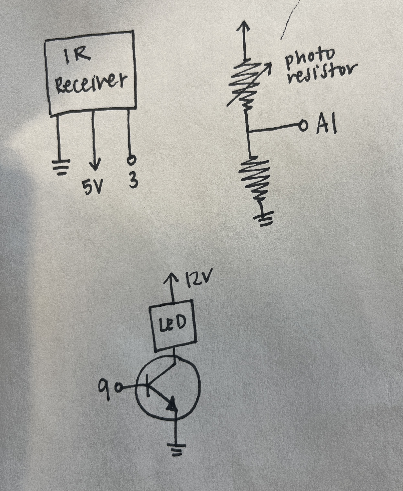
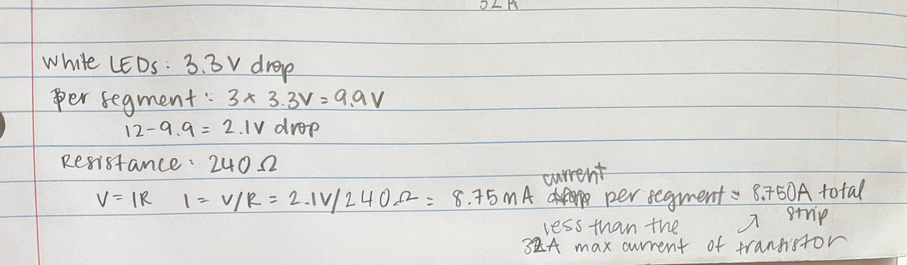

There's this staircase that leads to my apartment gets that gets really dark at night that leads to my apartment, so I wanted to use an LED strip that functioned as a night light to light up the staircase.
I started out by sketching out a couple schematics that indicated how the components I was using would work. To create this project, I used a photoresistor (which took in light values) and IR remote receiver (which allowed me to turn the LED strip on and off) as inputs and used a pin connecting to a transistor (which allowed me to control the LED strip via my computer) as an output. I connected all of the components to on my breadboard(which is pictured below), and began coding via Arduino.
I used a 10k resistor for the photoresistor because a voltage divider is needed to make the voltage drop measurable so that the amount of light the photoresistor receives can be determined.
As seen in the calculations above, the current used by the LED strip (8.75 A) is less than the max current that the transistor can handle (32A).
Some of the biggest challenges I had with the technical aspect of the nightlight included: Calibration: I had initially set up my transistor to turn the LED on and off based on how much light the photoresistor took in. However, during office hours, Jasper and I found that the LED strip was so bright that when it turned on, the photoresistor would start reading the LED strip's brightness as well, and thus the transistor would switch the LED strip off, leading to a blinking effect. To respond to this, I used Arduino's callibration example code to automatically identify maximum and minimum sensor values and turn the LED strip on and off accordingly. Breadboard issues: One of the other issues I made a lot of little mistakes like with the IR remote, when I was sometimes connecting the wrong wire to ground. Another time, I didn't have my claw clamps properly connected on the dots of the LED strip, so the LED strip wasn't turning on.
Here is all the Aruduino Code for my final project!
Arduino Code